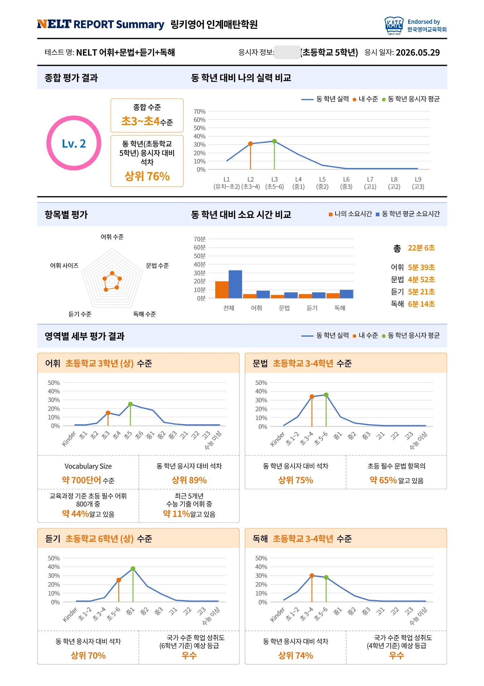
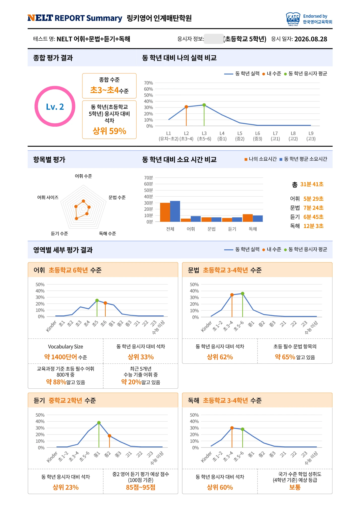
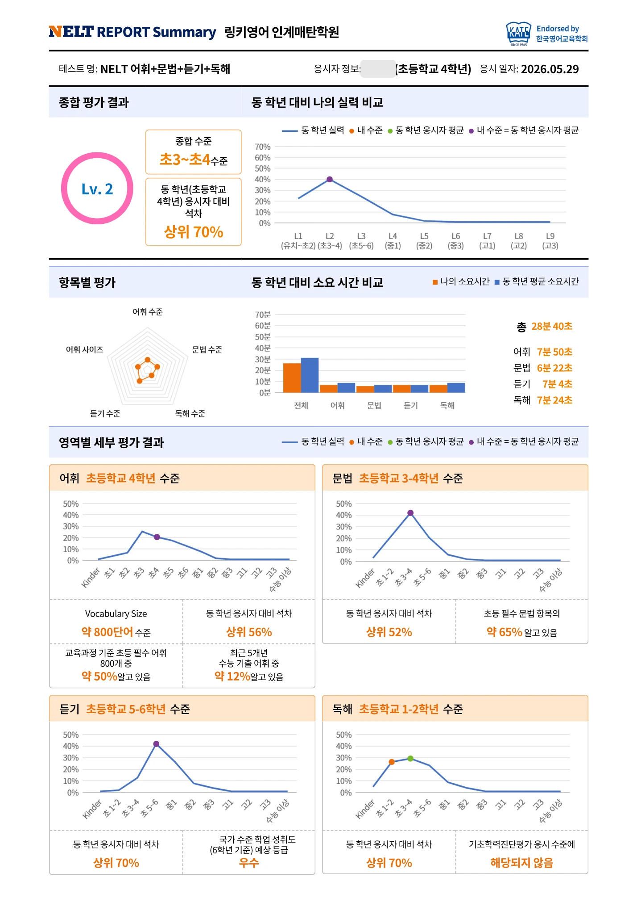
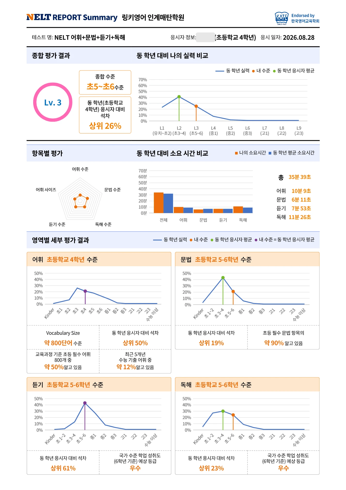
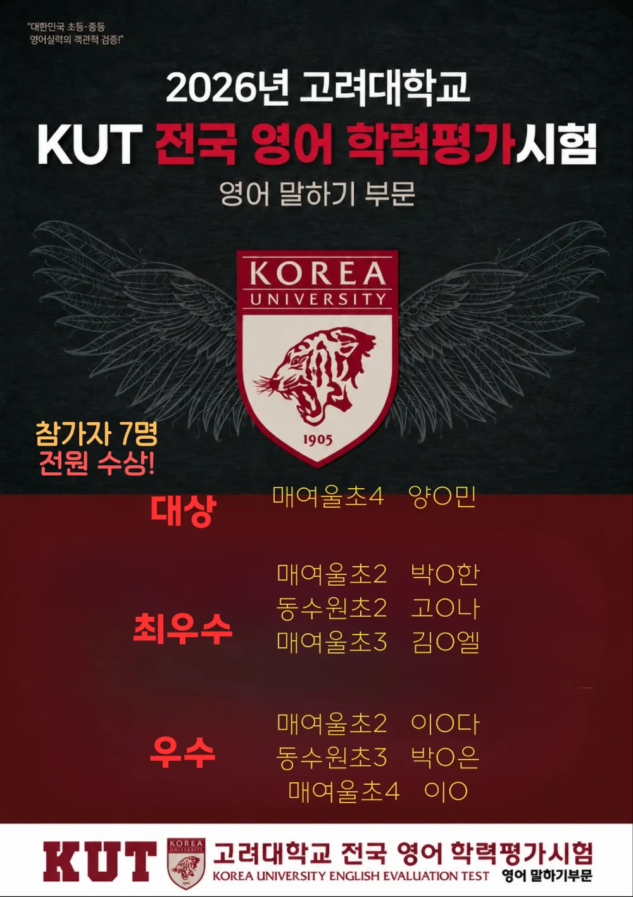
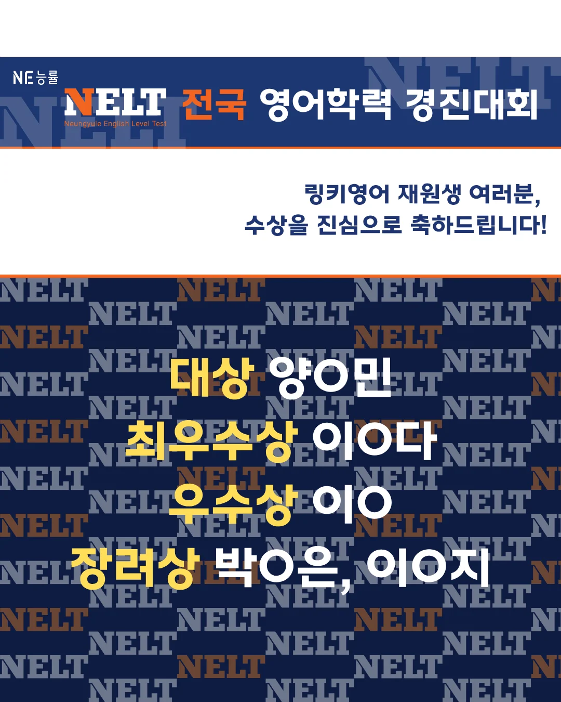

링키영어 인계매탄학원은 단순한 진도보다 아이가 실제로 얼마나 듣고, 읽고, 말하고, 표현할 수 있게 되었는지를 중요하게 생각합니다.
TEENZ 수업은 아래 여섯 단계를 반복하며 듣기에서 말하기까지 이어집니다. 3개월 동안 이 과정을 반복한 아이들의 실제 변화는 아래 성장 기록에서 익명으로 소개합니다.
Readers 이야기를 원어민 음성으로 들으며 글을 눈으로 따라가요. 소리와 글자가 함께 들어오도록 집중해서 듣는 시간이에요.
들은 문장을 바로 따라 읽어요. 속도와 억양까지 흉내 내면서 영어 소리를 입에 붙여요.
이야기 속 핵심 표현을 골라 뜻과 쓰임을 익혀요. 오늘 꼭 가져갈 표현을 분명하게 정리해요.
익힌 표현으로 아이가 직접 문장을 만들어 말해 봐요. 따라 하던 영어가 내 말이 되는 단계예요.
실제 상황처럼 꾸민 장면 속에서 영어로 대화해요. 교실 안에서 어학연수를 떠난 듯 말해 봐요.
선생님이 아이 한 명씩 말하기를 점검하고, 부족한 부분은 다시 연습해요. 이 확인을 꾸준히 반복해요.
TEENZ 과정으로 3개월 동안 공부한 두 학생이 다시 본 NELT(어휘·문법·듣기·독해) 결과예요. 2026년 5월 29일과 8월 28일 성적표 내용을 그대로 옮겼습니다.


초3(상) → 초6
아는 단어가 약 700개에서 약 1,400개로 두 배가 됐어요.
초6(상) → 중2
동학년 대비 상위 70%에서 상위 23%가 됐어요.
상위 76% → 상위 59%
문법과 독해도 동학년 대비 순위가 함께 올랐어요.
| 항목 | 2026.05.29 | 2026.08.28 |
|---|---|---|
| 종합 수준 | 초3~초4 수준 | 초3~초4 수준 |
| 종합 · 동학년 대비 | 상위 76% | 상위 59% |
| 어휘 수준 | 초등학교 3학년(상) | 초등학교 6학년 |
| 어휘량 (Vocabulary Size) | 약 700단어 | 약 1,400단어 |
| 교육과정 기준 초등 필수 어휘 800개 중 아는 비율 | 약 44% | 약 88% |
| 어휘 · 동학년 대비 | 상위 89% | 상위 33% |
| 듣기 수준 | 초등학교 6학년(상) | 중학교 2학년 |
| 듣기 · 동학년 대비 | 상위 70% | 상위 23% |
| 문법 · 동학년 대비 | 상위 75% | 상위 62% |
| 독해 · 동학년 대비 | 상위 74% | 상위 60% |


Lv.2 → Lv.3
종합 수준이 초3~초4에서 초5~초6으로, 동학년 대비 상위 70%에서 상위 26%가 됐어요.
초1-2 → 초5-6
동학년 대비 상위 70%에서 상위 23%가 됐어요.
초3-4 → 초5-6
초등 필수 문법 항목을 약 65%에서 약 90% 알게 됐어요.
| 항목 | 2026.05.29 | 2026.08.28 |
|---|---|---|
| 종합 수준 | Lv.2 · 초3~초4 수준 | Lv.3 · 초5~초6 수준 |
| 종합 · 동학년 대비 | 상위 70% | 상위 26% |
| 어휘 수준 | 초등학교 4학년 | 초등학교 4학년 |
| 어휘 · 동학년 대비 | 상위 56% | 상위 50% |
| 문법 수준 | 초등학교 3-4학년 | 초등학교 5-6학년 |
| 문법 · 동학년 대비 | 상위 52% | 상위 19% |
| 초등 필수 문법 항목 이해 | 약 65% | 약 90% |
| 듣기 수준 | 초등학교 5-6학년 | 초등학교 5-6학년 |
| 듣기 · 동학년 대비 | 상위 70% | 상위 61% |
| 독해 수준 | 초등학교 1-2학년 | 초등학교 5-6학년 |
| 독해 · 동학년 대비 | 상위 70% | 상위 23% |
학생 이름과 개인정보는 가렸고, 학부모님 동의를 받아 공개합니다. "상위 %"는 같은 학년 응시자 대비 석차로, 숫자가 작을수록 순위가 높아요.
링키영어 인계매탄학원 재원생들이 전국 규모 영어 대회에 참가해 받은 상이에요. 학생 이름은 가렸습니다.

